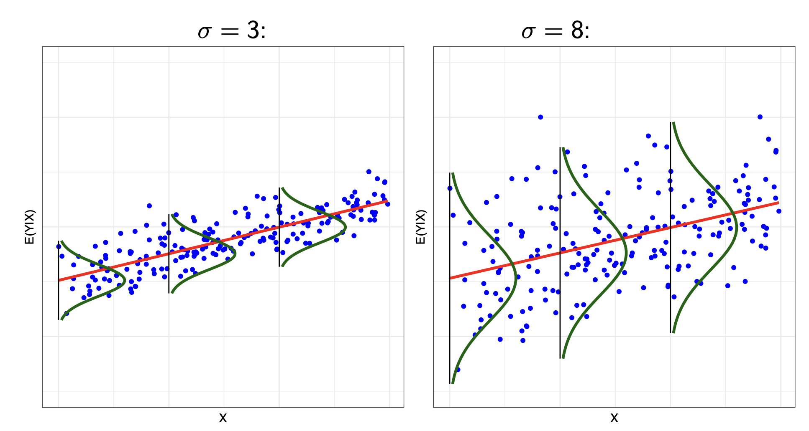

Classical Least Squares Theory
Chapter 3, Quantitative Methods (Causal Inference)
Last chapter, we discussed the multiple linear regression model, and how it can help us measure relationships between explanatory and outcome variables.
This chapter introduces some key theory regarding the ordinary least squares estimator behind linear regression. Topics covered includes properties of estimators, the OLS estimator, and the Method of Moments estimator.
Use the right sidebar for quick navigation. This chapter is heavy on linear algebra, so consulting the linear algebra reference is useful.
Ordinary Least Squares Estimator
Deriving the Estimator
Our linear regression model, and the fitted values \(\hat{\mathbf{y}}\), take the following form:
\[ \mathbf y = \mathbf X \boldsymbol\beta + \mathbf u, \qquad \hat{\mathbf y} = \mathbf X \hat{\boldsymbol\beta} \]
OLS minimises the sum of squared residuals \(S(\hat{\boldsymbol\beta})\) - the differences between the actual \(\mathbf y\) and our predicted \(\hat{\mathbf y}\):
\[ \begin{align} S(\hat{\boldsymbol\beta}) & = (\mathbf y - \hat{\mathbf y})^\mathsf{T} (\mathbf y - \hat{\mathbf y})\\ & = (\mathbf y - \color{blue}{\mathbf X \hat{\boldsymbol\beta}}\color{black})^\mathsf{T} (\mathbf y - \color{blue}{\mathbf{X} \hat{\boldsymbol\beta}}\color{black}) && (\text{plug in } \color{blue}{\hat{\mathbf y} = \mathbf X \hat{\boldsymbol\beta}}\color{black}) \\ & = \mathbf y^\mathsf{T} \mathbf y - \hat{\boldsymbol\beta}^\mathsf{T} \mathbf X^\mathsf{T} \mathbf y - \mathbf y^\mathsf{T} \mathbf{X}\hat{\boldsymbol\beta} + \hat{\boldsymbol\beta}^\mathsf{T} \mathbf X^\mathsf{T} \mathbf{Xb} && (\text{distribute out)} \\ & = \mathbf y^\mathsf{T} \mathbf y - \color{blue}{2\hat{\boldsymbol\beta}^\mathsf{T} \mathbf X^\mathsf{T} \mathbf y}\color{black} + \hat{\boldsymbol\beta}^\mathsf{T} \mathbf X^\mathsf{T} \mathbf{X} \hat{\boldsymbol\beta} &&(\text{combine } \color{blue}{- \hat{\boldsymbol\beta}^\mathsf{T} \mathbf X^\mathsf{T} \mathbf y - \mathbf y^\mathsf{T} \mathbf{X}\hat{\boldsymbol\beta}}\color{black}) \end{align} \]
Now, let us find the first order condition:
\[ \frac{\partial S(\hat{\boldsymbol\beta})}{\partial \hat{\boldsymbol\beta}} = -2\mathbf X^\mathsf{T} \mathbf y + 2 \mathbf X^\mathsf{T} \mathbf{X} \hat{\boldsymbol\beta} = 0 \]
When assuming \(\mathbf X^\mathsf{T} \mathbf X\) is invertable (which is true if \(\mathbf X\) is full rank), we can isolate \(\hat{\beta}\) to find the solution to OLS:
\[ \begin{align} -2\mathbf X^T\mathbf y + 2 \mathbf X^\mathsf{T} \mathbf X \boldsymbol{\hat{\beta}} & = 0 \\ 2 \mathbf X^\mathsf{T} \mathbf X \boldsymbol{\hat\beta} & = 2\mathbf X^\mathsf{T} \mathbf y && (+ 2\mathbf X^\mathsf{T} \mathbf y \text{ to both sides}) \\ \boldsymbol{\hat\beta} & = (2\mathbf X^\mathsf{T} \mathbf X)^{-1} 2 \mathbf X^\mathsf{T} \mathbf y && (\times (2\mathbf X^\mathsf{T} \mathbf X)^{-1} \text{ to both sides})\\ \boldsymbol{\hat\beta} & = (\mathbf X^\mathsf{T} \mathbf X)^{-1} \mathbf X^\mathsf{T} \mathbf y &&(\text{cancel out } 2^{-1}\times 2) \end{align} \tag{1}\]
Those are our coefficient solutions to OLS.
Currently, we are deriving the first order conditions for multiple linear regression using linear algebra.
For simple linear regression (with one explanatory variable), we can use summation notation. Recall our sum of squared residuals in summation form:
\[ SSR = S(\widehat{\beta_0}, \widehat{\beta_1})= \sum\limits_{i=1}^n(y_i - \widehat{\beta_0} - \widehat{\beta_1}x_i)^2 \]
We want to minimise the SSR in respect to both \(\widehat{\beta_0}\) and \(\widehat{\beta_1}\). We can do this by taking the partial derivative in respect to both, and setting them equal to 0. We can find the partial derivative with chain rule and sum rule:
\[ \begin{align} \frac{\partial S(\widehat{\beta_0}, \widehat{\beta_1})}{\partial \widehat{\beta_0}} & = \sum\limits_{i=1}^n(y_i - \widehat{\beta_0} - \widehat{\beta_1}x_i) = 0 \\ \frac{\partial S(\widehat{\beta_0}, \widehat{\beta_1})}{\partial \widehat{\beta_1}} & = \sum\limits_{i=1}^nx_i(y_i - \widehat{\beta_0} - \widehat{\beta_1}x_i) = 0 \end{align} \]
These conditions create a system of equations, which you can solve for the OLS solutions of \(\widehat{\beta_0}\) and \(\widehat{\beta_1}\). I will not show it step by step, as it is tedious (and not that important). The OLS solutions are
\[ \begin{align} \widehat{\beta_0} & = \bar y - \widehat{\beta_1} \bar x \\ \widehat{\beta_1} & = \frac{\sum_{i=1}^n(x_i - \bar x)(y_i - \bar y)}{\sum_{i=1}^n(x_i - \bar x)^2} = \frac{Cov(x, y)}{Var(y)} \end{align} \]
Projection and Residual Maker
We can use the OLS solution from Equation 1 to get our fitted values \(\hat{\mathbf y}\):
\[ \begin{align} \hat{\mathbf y} & = \mathbf X \hat{\boldsymbol\beta} \\ & = \mathbf X \color{blue}{(\mathbf X^\mathsf{T} \mathbf X)^{-1} \mathbf X^\mathsf{T} \mathbf y} && \color{black}(\text{plug in OLS solution } \color{blue}{\hat{\boldsymbol\beta} = (\mathbf X^\mathsf{T} \mathbf X)^{-1} \mathbf X^\mathsf{T} \mathbf y}) \\ & = \color{red}{\mathbf P}\color{black}{\mathbf y} && \text{(where } \color{red}{\mathbf P :=\mathbf X (\mathbf X^\mathsf{T} \mathbf X)^{-1} \mathbf X^\mathsf{T}}) \end{align} \tag{2}\]
Matrix \(\color{red}{\mathbf P}\), called the projection matrix, is a matrix operator that performs the linear mapping \(\mathbf y \rightarrow \hat{\mathbf y}\).
We can also use the OLS solution from Equation 1 to get our residuals \(\hat{\mathbf u}\):
\[ \begin{align} \hat{\mathbf u} & = \mathbf y - \hat{\mathbf y} \\ & = \mathbf y - \color{blue}{\mathbf P\mathbf y} && \color{black}(\text{from equation (2) } \color{blue}{\hat{\mathbf y} = \mathbf P \mathbf y} \color{black}) \\ & = (\mathbf I - \mathbf P)\mathbf y && (\text{factor out } \mathbf y) \\ & = \color{purple}{\mathbf M} \color{black}{\mathbf y} && (\text{where } \color{purple}{\mathbf M = \mathbf I - \mathbf P} \color{black}) \end{align} \]
Matrix \(\color{purple}{\mathbf M}\), called the residual maker, is a matrix operator that performs the linear mapping \(\mathbf y \rightarrow \hat{\mathbf u}\).
Both \(\color{red}{\mathbf P}\) and \(\color{purple}{\mathbf M}\) are symmetric matrices: \(\mathbf P^\mathsf{T} = \mathbf P\). They are also both idempotent matrices: \(\mathbf {PP} = \mathbf P\). We can prove this second statement using the first (I will only do it for \(\mathbf P\), but the same applies for \(\mathbf M\):
\[ \begin{align} \mathbf{PP} & = \mathbf X (\mathbf X^\mathsf{T} \mathbf X)^{-1} \underbrace{\mathbf X^\mathsf{T} \mathbf X (\mathbf X^\mathsf{T} \mathbf X)^{-1}}_{= \ \mathbf I} \mathbf X^\mathsf{T} \\ & = \mathbf X (\mathbf X^\mathsf{T} \mathbf X)^{-1} \mathbf X^\mathsf{T} \\ & = \mathbf P \end{align} \tag{3}\]
\(\color{red}{\mathbf P}\) and \(\color{purple}{\mathbf M}\) are also orthogonal to each other - i.e. \(\mathbf P^\mathsf{T} \mathbf M = 0\):
\[ \begin{align} \mathbf P^\mathsf{T}\mathbf M & = \mathbf {PM} && (\because \mathbf P^\mathsf{T} = \mathbf P) \\ & = \mathbf P(\color{blue}{\mathbf I-\mathbf P}\color{black}) && (\because \color{blue}{\mathbf M = \mathbf I - \mathbf P}\color{black}) \\ & = \mathbf P - \mathbf{PP} && (\text{distribute out}) \\ & = \mathbf P - \color{blue}{\mathbf P} && (\because \text{equation (3)}) \\ & = 0 \end{align} \]
These two matrices will become very important throughout OLS theory.
Orthogonal Projection of OLS
We know that our fitted values \(\hat{\mathbf y}\) are created as a linear combination of our explanatory variables \(\mathbf X\):
\[ \widehat{y_i} = \beta_0 + \beta_1x_{1i} + \dots + \beta_kx_{ki} \]
That means, by the definition of vector spaces, that our explanatory variable vectors \(\mathbf x_j\) span a space that includes our fitted values vector \(\hat{\mathbf y}\).
So, what the matrix operator \(\color{red}{\mathbf P}\) is doing is essentially taking our original data \(\mathbf y\) values, and projecting it into the space spanned by our explanatory variables \(\mathbf X\) (called the column space).
We can see in the figure below, our observed \(\mathbf y\) vector is being projected onto the blue plane spanned by \(\mathbf X\) to create our fitted values vector \(\hat{\mathbf y}\).

Residual maker matrix \(\color{purple}{\mathbf M}\) projects \(\mathbf y\) onto the space orthogonal to the column space of \(\mathbf X\) to get our residuals \(\hat{\mathbf u}\). We can see this in the figure above, where the residuals vector (notated \(\mathbf e\) in the figure) is orthogonal/perpendicular to the space of \(\mathbf X\).
Error Covariance Matrix
Aside from the population parameters \(\boldsymbol\beta\), there is another part of the linear model that needs to be estimated: the population covariance matrix of error terms \(u_1, \dots u_n\):
\[ \underbrace{Var(\mathbf u|\mathbf X)}_{\text{cov. matrix}} = \begin{pmatrix} Var(u_1) & Cov(u_1, u_2) & Cov(u_1, u_3) & \dots \\ Cov(u_2, u_1) & Var(u_2) & Cov(u_2, u_3) & \dots \\ Cov(u_3, u_1) & Cov(u_3, u_2) & Var(u_3) & \vdots \\ \vdots & \vdots & \dots & \ddots \end{pmatrix} \]
Under the assumption of independence of observations (a key assumption of the linear model), the covariance elements should all equal 0. This assumption is also called no autocorrelation.
Thus, under this assumption, we have a diagonal matrix.
\[ \underbrace{Var(\mathbf u|\mathbf X)}_{\text{cov. matrix}} = \begin{pmatrix} Var(u_1) & 0 & 0 & \dots \\ 0 & Var(u_2) & 0 & \dots \\ 0 & 0 & Var(u_3) & \vdots \\ \vdots & \vdots & \dots & \ddots \end{pmatrix} \]
We are not really going to discuss what happens when autocorrelation is present, as generally for many of our purposes, ruling out autocorrelation is okay. However, if you are interested in time series (common in economics), or spatial statistics, these are types of data that frequently have autocorrelation issues, and this creates further complications.
Homoscedasticity and Heteroscedasticity
Now, there are two possible forms of our covariance matrix of errors. Homoscedasticity assumes that every single unit \(i\) has the same variance in error \(\sigma_i^2\). Or in other words, the error of \(u_i\) does not depend on unit \(i\)’s \(\mathbf X\) values:
\[ Var(\mathbf u | \mathbf X) = \sigma^2 \mathbf I_n = \begin{pmatrix} \sigma^2 & 0 & \dots & 0 \\ 0 & \sigma^2 & \dots & 0 \\ \vdots & \vdots & \ddots & 0 \\ 0 & 0 & \dots & \sigma^2 \end{pmatrix} \tag{4}\]
Below is a figure illustrating different residual standard deviations, with the same best-fit line.

\(\sigma^2\) is a population parameter. We can estimate it with the following unbiased estimator \(s^2 = \frac{\hat{\mathbf u}^\mathsf{T} \hat{\mathbf u}}{n-k-1}\). This is the reason we use a t-distribution in hypotheses tests - to account for the uncertainty of this estimator. We will show this later when deriving variance.
Heteroscedasticity is when we do not believe the assumption of a constant variance for all units. Instead, we assume each unit \(i = 1, \dots, n\) has their own variance \(\sigma^2_1, \dots, \sigma^2_n\):
\[ Var(\mathbf u | \mathbf X) = \begin{pmatrix} \sigma^2_1 & 0 & \dots & 0 \\ 0 & \sigma^2_2 & \dots & 0 \\ \vdots & \vdots & \ddots & 0 \\ 0 & 0 & \dots & \sigma^2_n \end{pmatrix} \tag{5}\]
We can estimate each individual population parameter \(\sigma^2_i\) with \(s^2_i = \hat{u_i}^2\).
An easy way to identify homoscedasticity is to look at a residual plot (just the plot of all \(\widehat{u_i}\)):

Notice how the homoscedasticity residuals seem to have the same up-down variance, no matter the value of \(x\).
The heteroscedasticity residuals have a clear pattern - the up-down variance is smaller when \(x\) is smaller, and the up-down variance is larger when \(x\) is larger.
Essentially, if you see a pattern in the residual plot, it is likely heteroscedasticity.
Sample Properties of OLS
OLS as an Unbiased Estimator
OLS is an unbiased estimator of the relationship between any \(x_j\) and \(y\) under 4 conditions:
- Linearity in parameters: the model of the population (data generating process) can be modelled as \(\mathbf y = \mathbf X \boldsymbol\beta + \mathbf u\).
- Random Sampling: the observations in our sample are randomly sampled.
- No Perfect Multicolinearity: There is no exact linear relationships between the regressors. This ensures that \(\mathbf X^\mathsf{T} \mathbf X\) is invertible, which is required for the derivation of OLS.
- Zero Conditional Mean: \(E(\mathbf u|\mathbf X) = 0\). This implies that no \(x_j\) is correlated with \(\mathbf u\) (exogeneity), and no function of multiple regressors is correlated with \(\mathbf u\).
Let us prove OLS is unbiased - i.e. \(E(\hat{\boldsymbol\beta}) = \boldsymbol\beta\). Let us manipulate our OLS solution:
\[ \begin{align} \boldsymbol{\hat\beta} & = (\mathbf X^\mathsf{T} \mathbf X)^{-1} \mathbf X^\mathsf{T} \mathbf y \\ & = (\mathbf X^\mathsf{T} \mathbf X)^{-1} \mathbf X^\mathsf{T}\color{blue}{(\mathbf X \boldsymbol\beta + \mathbf u)} && \color{black}(\text{plug in } \color{blue}{\mathbf y = \mathbf X \boldsymbol\beta + \mathbf u}\color{black}) \\ & = (\mathbf X^\mathsf{T} \mathbf X)^{-1} \mathbf X^\mathsf{T} \mathbf X \boldsymbol\beta + (\mathbf X^\mathsf{T} \mathbf X)^{-1} \mathbf X^\mathsf{T} \mathbf u &&(\text{multiply out})\\ & = \color{blue}{\mathbf I}\color{black}{\boldsymbol\beta} + (\mathbf X^\mathsf{T} \mathbf X)^{-1} \mathbf X^\mathsf{T} \mathbf u &&( \ \color{blue}{(\mathbf X^\mathsf{T} \mathbf X)^{-1} \mathbf X^\mathsf{T} \mathbf X = \mathbf I}\color{black})\\ & = \boldsymbol\beta + (\mathbf X^\mathsf{T} \mathbf X)^{-1} \mathbf X^\mathsf{T} \mathbf u && (\text{identity property of } \mathbf I) \end{align} \tag{6}\]
Now, let us take the expectation of \(\boldsymbol{\hat\beta}\) conditional on \(\mathbf X\). Remember condition 4, \(E(\mathbf u | \mathbf X) = 0\):
\[ \begin{align} E(\boldsymbol{\hat\beta}|\mathbf X) & = \boldsymbol\beta + (\mathbf X^\mathsf{T} \mathbf X)^{-1} E(\mathbf u | \mathbf X) &&(\mathbf u \text{ conditional on value of } \mathbf X) \\ E(\boldsymbol{\hat\beta}|\mathbf X) & = \boldsymbol\beta &&(E(\mathbf u | \mathbf X) = 0) \end{align} \]
Now, we can use the law of iterated expectations (LIE) to conclude this proof:
\[ \begin{align} E(\boldsymbol{\hat\beta}) & = E(E(\boldsymbol{\hat\beta}|\mathbf X)) && (\text{LIE: E(X) = E(E(X|Y))})\\ & = E(\color{blue}{\boldsymbol\beta}) && (\text{from above, plug in } \color{blue}{E(\boldsymbol{\hat\beta}|\mathbf X) = \boldsymbol\beta}\color{black})\\ & = \boldsymbol\beta && (\text{expecation of a constant}) \end{align} \]
Thus, OLS is unbiased under the 4 conditions above.
Deriving Variance
We want to find the variance of our estimator, \(Var(\boldsymbol{\hat\beta} | \mathbf X)\). First, let us start off where we left off in Equation 6 .
\[ \begin{align} \boldsymbol{\hat\beta} & = \boldsymbol\beta + (\mathbf X^\mathsf{T} \mathbf X)^{-1} \mathbf X^\mathsf{T} \mathbf u \\ Var(\boldsymbol{\hat\beta} | \mathbf X) & = Var(\boldsymbol\beta + (\mathbf X^\mathsf{T} \mathbf X)^{-1} \mathbf X^\mathsf{T} \mathbf u \ | \ \mathbf X) \end{align} \]
If \(\mathbf u\) is an \(n\) dimensional vector of random variables, \(\mathbf c\) is an \(m\) dimensional vector, and \(\mathbf B\) is an \(n \times m\) dimensional matrix with fixed constants, then the following is true:
\[ Var(\mathbf c + \mathbf{Bu}) = \mathbf B Var(\mathbf u)\mathbf B^T \tag{7}\]
I will not prove this lemma here, but it is provable.
\(\boldsymbol\beta\) is a vector of fixed constants. \((\mathbf X^\mathsf{T} \mathbf X)^{-1} \mathbf X^\mathsf{T} \mathbf u\) can be imagined as a matrix of fixed constants, since we are conditioning the above variance on \(\mathbf X\) (so for each \(\mathbf X\), the statement is fixed). With the Lemma above, we can simplify:
\[ \begin{align} Var(\boldsymbol{\hat\beta} | \mathbf X) & = (\mathbf X^\mathsf{T} \mathbf X)^{-1} \mathbf X^\mathsf{T} Var(\mathbf u | \mathbf X) [(\mathbf X^\mathsf{T} \mathbf X)^{-1} \mathbf X^\mathsf{T}]^{-1} && (\text{lemma})\\ & = (\mathbf X^\mathsf{T} \mathbf X)^{-1} \mathbf X^\mathsf{T} Var(\mathbf u | \mathbf X) \color{blue}{\mathbf X (\mathbf X^\mathsf{T} \mathbf X)^{-1}} && \color{black}( \ \color{blue}{[(\mathbf X^\mathsf{T} \mathbf X)^{-1} \mathbf X^\mathsf{T}]^{-1} = \mathbf X(\mathbf X^\mathsf{T} \mathbf X)^{-1}}\color{black})\\ \end{align} \]
From here on, homoscedasticity and heteroscedasticity matter. Let us first start by deriving variance with homoscedasticity, using the definition given by Equation 4 :
\[ \begin{align} Var(\hat{\boldsymbol\beta}|\mathbf X)& = (\mathbf X^\mathsf{T} \mathbf X)^{-1} \mathbf X^\mathsf{T} \color{blue}{\sigma^2 \mathbf I_n}\color{black}{ \mathbf X} (\mathbf X^\mathsf{T} \mathbf X)^{-1} && (\color{blue}{Var(\mathbf u | \mathbf X) = \sigma^2 \mathbf I_n}\color{black}) \\ & = \color{red}{\sigma^2} \color{black} (\mathbf X^\mathsf{T} \mathbf X)^{-1} \mathbf X^\mathsf{T} \mathbf I_n \mathbf X (\mathbf X^\mathsf{T} \mathbf X)^{-1} && (\text{move scalar } \color{red}{\sigma^2}\color{black})\\ & = \sigma^2 (\mathbf X^\mathsf{T} \mathbf X)^{-1} \mathbf X^\mathsf{T} \mathbf X (\mathbf X^\mathsf{T} \mathbf X)^{-1} && (\text{identity property of } \mathbf I_n)\\ & = \sigma^2 (\mathbf X^\mathsf{T} \mathbf X)^{-1} && (\text{inverses } \mathbf X^\mathsf{T} \mathbf X (\mathbf X^\mathsf{T} \mathbf X)^{-1} \text{ cancel}) \end{align} \]
Now, let us calculate the variance for when heteroscedasticity is present, as defined by Equation 5 :
\[ Var(\hat{\boldsymbol\beta}|\mathbf X) = (\mathbf X^\mathsf{T} \mathbf X)^{-1} \mathbf X^\mathsf{T} \color{blue}{\begin{pmatrix} \sigma^2_1 & 0 & \dots & 0 \\ 0 & \sigma^2_2 & \dots & 0 \\ \vdots & \vdots & \ddots & 0 \\ 0 & 0 & \dots & \sigma^2_n \end{pmatrix}}\color{black}{ \mathbf X} (\mathbf X^\mathsf{T} \mathbf X)^{-1} \]
To calculate both sets of standard errors (normal and robust), we estimate \(\sigma^2\) and \(\sigma_i^2\) as discussed previously. The standard errors are then the square root of our estimated variances.
Gauss-Markov Theorem
The Gauss-Markov Theorem states that the OLS estimator is the best linear unbiased estimator (BLUE) - the unbiased linear estimator with the lowest variance, under 5 conditions: linearity, random sampling, no perfect multicollinearity, zero-conditional mean, and homoscedasticity.
Any linear estimator takes the form \(\tilde{\boldsymbol\beta} = \mathbf{Cy}\). For example, the OLS estimator is of the form \(\boldsymbol{\hat\beta} = (\mathbf X^\mathsf{T} \mathbf X)^{-1} \mathbf X^\mathsf{T} \mathbf y\), which is the same as form as \(\mathbf{Cy}\) if you define \(\mathbf C:= (\mathbf X^\mathsf{T} \mathbf X)^{-1} \mathbf X^\mathsf{T}\). For any linear estimator \(\tilde{\boldsymbol\beta} = \mathbf{Cy}\) to be unbiased, we need to assume \(\color{red}{\mathbf {CX} = \mathbf I}\).
For any linear estimator \(\tilde{\boldsymbol\beta} = \mathbf{Cy}\) to be unbiased, we need to assume \(\color{red}{\mathbf {CX} = \mathbf I}\). The proof of this is as follows:
The proof of this is as follows:
\[ \begin{align} \tilde{\boldsymbol\beta} & = \mathbf C(\color{blue}{\mathbf X\boldsymbol\beta + \mathbf u} \color{black}) && \text{plug in } \color{blue}{\mathbf y =\mathbf X\boldsymbol\beta + \mathbf u} \\ & = \mathbf{CX} \boldsymbol\beta + \mathbf{Cu} && \text{multiply out} \\ E(\tilde{\boldsymbol\beta}|\mathbf X)& = E(\mathbf{CX} \boldsymbol\beta + \mathbf{Cu}) && \text{take expectation} \\ & = \mathbf{CX} \boldsymbol\beta + \mathbf C E(\mathbf u|\mathbf X) && \text{take constants out of expectation} \\ & = \mathbf{CX} \boldsymbol\beta && \text{Zero-conditional mean} \\ & = \color{red}{\mathbf I}\color{black}{\boldsymbol\beta} = \boldsymbol\beta && \because \color{red}{\mathbf{CX} = \mathbf I} \\ E(\tilde{\boldsymbol\beta} & = E(E(\tilde{\boldsymbol\beta}|\mathbf X)) && \text{LIE: E(X) = E(E(X|Y)} \\ & = E(\color{blue}{\boldsymbol\beta}) && \because \color{blue}{E(\tilde{\boldsymbol\beta}|\mathbf X) = \boldsymbol\beta}\\ & = \boldsymbol\beta && \text{expectation of a constant} \end{align} \]
Thus, we have shown \(\color{red}{\mathbf {CX} = \mathbf I}\) is a necessary condition for any linear estimator \(\tilde{\boldsymbol\beta} = \mathbf{Cy}\) to be unbiased.
Now, let us calculate the variance of estimator \(\tilde{\boldsymbol\beta}\):
\[ \begin{align} Var(\tilde{\boldsymbol\beta}|\mathbf X) & = Var(\mathbf {Cy} | \mathbf X)\\ & = Var(\mathbf C(\color{blue}{\mathbf X\boldsymbol\beta + \mathbf u} \color{black})| \mathbf X) && (\text{plug in } \color{blue}{\mathbf y =\mathbf X\boldsymbol\beta + \mathbf u} \color{black}) \\ & = Var(\mathbf{CX} \boldsymbol\beta + \mathbf{Cu}| \mathbf X) && (\text{multiply out)} \\ & = Var(\boldsymbol\beta + \mathbf{Cu} | \mathbf X) && (\text{because }\color{red}{\mathbf {CX} = \mathbf I} \color{black}) \end{align} \]
Using the above lemma in Equation 7 that we used for OLS variance, we get:
\[ \begin{align} Var(\tilde{\boldsymbol\beta}|\mathbf X) & = \mathbf CVar(\mathbf u|\mathbf X)\mathbf C^\mathsf{T} && (\text{using lemma}) \\ & = \mathbf C \color{blue}{\sigma^2\mathbf I} \color{black}{\mathbf C^\mathsf{T}} && (\text{homoscedasticity } \color{blue}{Var(\mathbf u|\mathbf X) = \sigma^2 \mathbf I}) \\ & = \sigma^2 \mathbf {CC}^\mathsf{T} && (\text{identity property + rearrange}) \end{align} \]
Now, we want to show that the variance of the OLS estimator \(\hat{\boldsymbol\beta}\) (under homoscedasticity) is smaller than any linear estimator \(\tilde{\boldsymbol\beta}\). Let us find the difference between the variances of estimator \(\tilde{\boldsymbol\beta}\) and \(\hat{\boldsymbol\beta}\). Note: since \(\color{red}{\mathbf{CX} = \mathbf I}\), the following is also true: \(\color{red}{\mathbf X^\mathsf{T} \mathbf C^\mathsf{T} = (\mathbf{CX})^\mathsf{T} = \mathbf I}\).
\[ \begin{align} Var(\tilde{\boldsymbol\beta}|\mathbf X) - Var(\hat{\boldsymbol\beta} |\mathbf X) & = \sigma^2\mathbf{CC}^\mathsf{T} - \sigma^2(\mathbf X^\mathsf{T}\mathbf X)^{-1} \\ & = \sigma^2(\mathbf{CC}^\mathsf{T} - (\mathbf X^\mathsf{T}\mathbf X)^{-1}) && (\text{factor out }\sigma^2) \\ & = \sigma^2(\mathbf{CC}^\mathsf{T} - \color{red}{\mathbf{CX}}\color{black}(\mathbf X^\mathsf{T}\mathbf X)^{-1}\color{red}{\mathbf X^\mathsf{T} \mathbf C^\mathsf{T}}\color{black}) && (\text{since }\color{red}{\mathbf X^\mathsf{T} \mathbf C^\mathsf{T} = \mathbf{CX} = \mathbf I} \color{black}) \\ & = \sigma^2 \mathbf C (\mathbf I - \mathbf X(\mathbf X^\mathsf{T}\mathbf X)^{-1}\mathbf X^\mathsf{T})\mathbf C^\mathsf{T} && (\text{factor out } \mathbf C, \mathbf C^\mathsf{T}) \\ & = \sigma^2 \mathbf C\color{blue}{\mathbf M} \color{black}{\mathbf C}^\mathsf{T} && \text{(residual maker matrix M)} \end{align} \]
Since \(\sigma^2 \mathbf {CM}\mathbf C^\mathsf{T}\) is positive semi-definite (I will not prove this, but it is provable), we know that \(Var(\tilde{\boldsymbol\beta}|\mathbf X) > Var(\hat{\boldsymbol\beta}|\mathbf X)\). Thus, OLS is BLUE under the Gauss-Markov Theorem.
Asymptotic Consistency of OLS
OLS is an asymptotically consistent estimator of the relationship between any \(x_j\) and \(y\) under 4 conditions. These conditions are identical to the unbiasedness conditions EXCEPT condition 4, which is weakened from the original unbiasedness condition.
- Linearity (see unbiasedness)
- Random Sampling (…)
- No Perfect Multicolinearity (…)
- Zero Mean and Exogeneity: \(E(u_i) = 0\), and \(Cov(x_i, u_i) = 0\), which implies \(E(\mathbf x_i u_i) = 0\). This means that no regressor should be correlated with \(\mathbf u\). This is weaker than Zero-Conditional mean, since it means a function of regressors can be correlated with \(\mathbf u\).
The following statements are true:
\[ \begin{split} & \mathbf X^\mathsf{T} \mathbf X = \sum\limits_{i=1}^n \mathbf x_i \mathbf x_i^\mathsf{T} \\ & \mathbf X^\mathsf{T} \mathbf u = \sum\limits_{i=1}^n \mathbf x_i u_i \end{split} \]
Let us start of where we left of from Equation 6. Using vector notation, law of large numbers, and zero-mean and exogeneity condition:
\[ \begin{align} \boldsymbol{\hat\beta} & = \boldsymbol\beta + (\mathbf X^\mathsf{T} \mathbf X)^{-1} \mathbf X^\mathsf{T} \mathbf u \\ \boldsymbol{\hat\beta} & = \boldsymbol\beta + \left( \sum\limits_{i=1}^n \mathbf x_i \mathbf x_i^\mathsf{T} \right)^{-1} \left( \sum\limits_{i=1}^n \mathbf x_i \mathbf u \right) && (\text{vector notation})\\ \boldsymbol{\hat\beta} & = \boldsymbol\beta + \left( \frac{1}{n}\sum\limits_{i=1}^n \mathbf x_i \mathbf x_i^\mathsf{T} \right)^{-1} \left( \frac{1}{n}\sum\limits_{i=1}^n \mathbf x_i \mathbf u \right) && ( \ \left(\frac{1}{n} \right)^{-1} \text{and } \frac{1}{n} \text{ cancel out}) \\ \text{plim} \boldsymbol{\hat\beta} & = \boldsymbol\beta + \left( \text{plim} \frac{1}{n}\sum\limits_{i=1}^n \mathbf x_i \mathbf x_i^\mathsf{T} \right)^{-1} \left( \text{plim} \frac{1}{n}\sum\limits_{i=1}^n \mathbf x_i u_i \right) && (\text{apply plim}) \\ \text{plim} \boldsymbol{\hat\beta} & = \boldsymbol\beta + (E(\mathbf x_i \mathbf x_i^\mathsf{T}))^{-1}E(\mathbf x_i u_i) && (\text{law of large numbers})\\ \text{plim} \boldsymbol{\hat\beta} & = \boldsymbol\beta && (E(\mathbf x_i u_i) = 0) \end{align} \]
Thus, OLS is asymptotically consistent under the 4 conditions above.
Regression Anatomy and Specification
Partitioned Regression Model
We can split up matrix \(\mathbf X\) into two matrices - \(\mathbf X_1\) containing the regressors we care about, and \(\mathbf X_2\) containing regressors we do not care about. \(\boldsymbol\beta\) will be split in the same way. Our partitioned model is:
\[ \mathbf y = \mathbf X_1 \boldsymbol\beta_1 + \mathbf X_2 \boldsymbol\beta_2 + \mathbf u \]
Recall our “residual maker” matrix \(\mathbf M\). First, note a unique property: \(\color{red}{\mathbf {MX} = 0}\). Now, let us define the residual making matrix for the second part of the regression \(\mathbf M_2\):
\[ \mathbf M_2 = \mathbf I - \mathbf X_2 (\mathbf X_2^\mathsf{T} \mathbf X_2) \mathbf X_2^\mathsf{T} \]
Now, let us multiply both sides of our above partitioned model by \(\mathbf M_2\):
\[ \begin{align} \mathbf M_2 \mathbf y & = \mathbf M_2(\mathbf X_1 \boldsymbol\beta_1 + \mathbf X_2 \boldsymbol\beta_2 + \mathbf u) \\ \mathbf M_2 \mathbf y & = \mathbf M_2 \mathbf X_1 \boldsymbol\beta_1 + \mathbf M_2 \mathbf X_2 \boldsymbol\beta_2 + \mathbf M_2 \mathbf u && (\text{multiply out}) \\ \mathbf M_2 \mathbf y & = \mathbf M_2 \mathbf X_1 \boldsymbol\beta_1 + \mathbf M_2 \mathbf u && ( \because \mathbf M_2 \mathbf X_2 =0, \because \color{red}{\mathbf {MX} = 0}) \end{align} \]
Now, let us denote \(\tilde{\mathbf y} := \mathbf M_2 \mathbf y\), \(\tilde{\mathbf X}_1: = \mathbf M_2 \mathbf X_1\), and error \(\mathbf e := \mathbf M_2 \mathbf u\). Then we get the following regression equation and OLS coefficient estimates:
\[ \tilde{\mathbf y} = \tilde{\mathbf X}_1\boldsymbol\beta_1 + \mathbf e \]
\[ \hat{\boldsymbol\beta}_1 = (\tilde{\mathbf X}_1^\mathsf{T} \tilde{\mathbf X}_1)^{-1}\tilde{\mathbf X}_1^\mathsf{T} \tilde{\mathbf y} \]
Remember that \(\hat{\boldsymbol\beta}_1\) is our coefficient estimates for \(\mathbf X_1\), the portion of \(\mathbf X\) we are interested in. This is equivalent to the coefficient estimates had we not partitioned the model.
Notice how in the formula, we have \(\tilde{\mathbf X}_1\). What is \(\tilde{\mathbf X}_1 := \mathbf M_2 \mathbf X_1\)? Well, we know that \(\mathbf M_2 \mathbf X_2 = 0\). That tells us that any part of \(\mathbf X_1\) that was correlated to \(\mathbf X_2\) also became 0. Thus, \(\tilde{\mathbf X}_1\) is the part of \(\mathbf X_1\) that is uncorrelated with \(\mathbf X_2\).
What this essentially means is that the coefficient estimates of OLS \(\hat\beta_j\) actually measure the effect on \(y\) of the part of \(x_j\) uncorrelated with the other explanatory variables \(x_1, \dots, x_k\). Essentially, we are partialling out the effect of other variables. This is why we can “control” for other variables when focusing on the coefficient of one (or a few) variables.
Omitted Variable Bias
From the regression anatomy theorem, we know that \(\hat\beta_j\) is the relationship of \(y\) and the part of \(x_j\) that is uncorrelated with all the other explanatory variables. That implies that if we omit a variable that is correlated with both \(x_j\) and \(y\), that we will get a different (biased) coefficient estimate. This is called omitted variable bias.
Suppose there is some variable \(z\) that we have not included in a “short” regression. The actual, “true” regression of the population, would include this confounder \(z\)
\[ \underbrace{\mathbf y = \mathbf X \boldsymbol\beta + \mathbf u}_{\text{short regression}} \qquad \underbrace{\mathbf y = \mathbf X \boldsymbol\beta + \mathbf z\boldsymbol\delta + \mathbf u}_{\text{true regression with z} } \]
The OLS estimate of the “short regression” excluding confounder \(z\) is:
\[ \begin{align} \boldsymbol{\hat\beta} & = (\mathbf X^T \mathbf X)^{-1} \mathbf X^T \mathbf y \\ & = (\mathbf X^\mathsf{T} \mathbf X)^{-1} \mathbf X^\mathsf{T} (\color{blue}{\mathbf X \boldsymbol\beta + \mathbf z\boldsymbol\delta + \mathbf u}\color{black}) && (\text{plug in } \color{blue}{\mathbf y = \mathbf X \boldsymbol\beta + \mathbf z\boldsymbol\delta + \mathbf u}\color{black} )\\ & = (\mathbf X^\mathsf{T} \mathbf X)^{-1} \mathbf X^\mathsf{T} \mathbf X \boldsymbol\beta + (\mathbf X^\mathsf{T} \mathbf X)^{-1} \mathbf X^\mathsf{T} \mathbf z\boldsymbol\delta + (\mathbf X^\mathsf{T} \mathbf X)^{-1} \mathbf X^\mathsf{T} \mathbf u && (\text{multiply out})\\ & = \color{blue}{\mathbf I}\color{black}{\boldsymbol\beta} + (\mathbf X^\mathsf{T} \mathbf X)^{-1} \mathbf X^\mathsf{T} \mathbf z\boldsymbol\delta + (\mathbf X^\mathsf{T} \mathbf X)^{-1} \mathbf X^\mathsf{T} \mathbf u && (\text{inverses } (\color{blue}{\mathbf X^\mathsf{T} \mathbf X)^{-1} \mathbf X^\mathsf{T} \mathbf X = \mathbf I}\color{black})\\ & = \boldsymbol\beta + (\mathbf X^\mathsf{T} \mathbf X)^{-1} \mathbf X^\mathsf{T} \mathbf z\boldsymbol\delta + (\mathbf X^\mathsf{T} \mathbf X)^{-1} \mathbf X^\mathsf{T} \mathbf u && (\text{identity property of } \mathbf I) \end{align} \]
Now, let us find the expected value of \(\boldsymbol{\hat\beta}\), which is conditional on \(\mathbf X, \mathbf z\), and simplify (using zero conditional mean):
\[ \begin{align} E(\boldsymbol{\hat\beta}|\mathbf X, \mathbf z) & = \boldsymbol\beta + (\mathbf X^\mathsf{T} \mathbf X)^{-1} \mathbf X^\mathsf{T} \mathbf z\boldsymbol\delta + (\mathbf X^\mathsf{T} \mathbf X)^{-1} \mathbf X^\mathsf{T} E(\mathbf u | \mathbf X, \mathbf z) \\ & = \boldsymbol\beta + (\mathbf X^\mathsf{T} \mathbf X)^{-1} \mathbf X^\mathsf{T} \mathbf z\boldsymbol\delta &&(\because E(\mathbf u | \mathbf X, \mathbf z) = 0) \end{align} \]
Now, what if we had a regression of outcome variable being the confounder \(z\), on the explanatory variables \(\mathbf X\), such that \(\mathbf z = \mathbf X \boldsymbol\pi + \mathbf v\). Our OLS estimate would have the solution:
\[ \boldsymbol{\hat\pi} = (\mathbf X^\mathsf{T}\mathbf X)^{-1}\mathbf X^\mathsf{T} \mathbf z \]
Now, we can plug \(\boldsymbol{\hat\pi}\) into our expected value of \(\boldsymbol{\hat\beta}\). Assume our estimator \(\hat{\boldsymbol\pi}\) is unbiased:
\[ \begin{align} E(\boldsymbol{\hat\beta}|\mathbf X, \mathbf z) & = \boldsymbol\beta + \boldsymbol{\hat\pi \delta} \\ E(\boldsymbol{\hat\beta}) & = E(E(\boldsymbol{\hat\beta}|\mathbf X, \mathbf z)) && (\text{LIE: } E(X) = E(E(X|Y))\\ & = E(\color{blue}{\boldsymbol\beta + \boldsymbol{\hat\pi \delta}}\color{black}) && (\text{from the 1st line } \color{blue}{E(\boldsymbol{\hat\beta}|\mathbf X, \mathbf z) = \boldsymbol\beta + \boldsymbol{\hat\pi \delta}} \color{black}) \\ & = \boldsymbol\beta + E(\boldsymbol{\hat\pi}) \boldsymbol \delta && (\boldsymbol\beta, \boldsymbol\delta\text{ are constants})\\ & = \boldsymbol\beta + \boldsymbol{\pi \delta} && (\text{unbiased estimator } E(\boldsymbol{\hat\pi}) = \boldsymbol\pi) \end{align} \]
Thus, we can see by not including confounder \(z\) in our “short regression”, the estimator is now biased by \(\boldsymbol{\hat\pi \delta}\). In the next chapter when we start discussing causality, we will see omitted confounders as a huge issue in our estimation.
Method of Moments Estimator
Method of Moments
The Method of Moments Estimator is another estimator of the true value of populations in the parameter. The estimator defines key population moments of interest - which are the population parameters written in terms of expected value functions set equal to 0.
Then, the Method of Moments uses the sample equivalents of the population moments to estimate the population parameter. For example, to estimate the population mean, the Method of Moments uses the sample mean.
In order to define a method of moments for a set of parameters \(\theta_1, \dots, \theta_k\), we need to specify at least one population moment per parameter. Or in other words, we must have more than \(k\) population moments.
Our population moments can be defined as the expected value of some function \(m(\theta; y)\) that consists of both the variable \(y\) and our unknown parameter \(\theta\). The expectation of the function \(m(\theta; y)\) should equal 0.
\[ E(m(\theta; y)) = 0 \]
Our sample moments will be the sample analogues of \(\theta\) and \(y\), which are \(\hat\theta\) and \(y_i\):
\[ \frac{1}{n}\sum\limits_{i=1}^n m(\hat\theta; y_i) = 0 \]
Method of moments estimators are asymptotically consistent, because of the law of large numbers.
Population Mean Estimator
Let us say that we have some random variable \(y\), with a true population mean \(\mu\). We want to estimate \(\mu\), but we only have a sample of the population.
How can we define \(\mu\) in a moment of the form: \(E(m(\mu, y)) = 0\)? Well, we know \(\mu\) is the expectation of \(y\), so \(\mu = E(y)\). Since they are equal, \(\mu - E(y) = 0\). Thus, we can define the mean as a moment of the following condition:
\[ E(y - \mu) = 0 \]
The method of moments estimator uses the sample equivalent of the population moment. The sample equivalent of \(\mu\), is the sample mean \(\bar y\):
\[ E(y_i - \hat\mu) = \frac{1}{n}\sum\limits_{i=1}^n (y_i - \hat\mu) = 0 \]
With this equation, we can then solve for \(\hat\mu\):
\[ \begin{align} 0 & = \frac{1}{n}\sum\limits_{i=1}^n (y_i - \hat\mu) \\ 0 & = \frac{1}{n}\sum\limits_{i=1}^ny_i - \frac{1}{n}\sum\limits_{i=1}^n \hat\mu && (\text{multiply out})\\ 0 & = \frac{1}{n}\sum\limits_{i=1}^ny_i - \frac{1}{n} n \hat\mu &&(\text{summation property of constant } \hat\mu)\\ 0 & = \bar y - \hat \mu && (\text{definition of mean }\frac{1}{n}\sum\limits_{i=1}^ny_i = \bar y)\\ \hat\mu & = \bar y && (+\hat\mu\text{ to both sides}) \end{align} \]
So, we see the method of moments estimates our true population mean \(\mu\), with the sample mean \(\bar y\). As a method of moments estimator, it is also asymptotically consistent.
OLS as a Method of Moments
OLS is a special case of the Method of Moments Estimator. Consider the bivariate regression model. The OLS estimator can be derived as a method of moments estimator, with 2 moments (expectation functions set equal to 0), one for each parameter (\(\beta_0, \beta_1\)):
\[ \begin{split} & E(y-\beta_0 -\beta_1x) = E(u) = 0 \\ & E(x(y - \beta_0 - \beta_1 x)) = E(xu) = 0 \end{split} \]
The estimates of these moments would use the sample equivalents: \(\hat\beta_0\) and \(\hat\beta_1\).
\[ \begin{split} & E(y-\hat\beta_0 -\hat\beta_1x) = 0 \\ & E(x(y - \hat\beta_0 - \hat\beta_1 x)) = 0 \end{split} \]
Remember our OLS minimisation conditions:
\[ \begin{split} & \sum\limits_{i=1}^n (y_i - \hat{\beta}_0 - \hat{\beta}_1 x_i) = 0 \\ & \sum\limits_{i=1}^n x_i (y_i - \hat{\beta}_0 - \hat{\beta}_1 x_i) = 0 \end{split} \]
Since by definition, average/expectation is \(E(x) = \frac{1}{n} \sum x_i\), we can rewrite the OLS minimisation conditions as:
\[ \begin{split} & n \times E(y_i - \hat\beta_0 - \hat\beta_1x_i) = 0 \\ & n \times E(x_i(y_i - \hat\beta_0 - \hat\beta_1x_i)) = 0 \end{split} \]
And since anything multiplied to a zero turns into zero, we can ignore the \(n\) in the first order condition, and only focus on the expected value part. Thus, our conditions are:
\[ \begin{split} & E(y_i - \hat\beta_0 - \hat\beta_1x_i) = 0 \\ & E(x_i(y_i - \hat\beta_0 - \hat\beta_1x_i)) = 0 \end{split} \]
Which as we can see, are the exact same minimisation conditions as the method of moments estimator. Thus, the OLS estimator is a special case of the Method of Moments estimator, and they produce the same coefficients. This is an important property for the instrumental variables method that will be covered later.